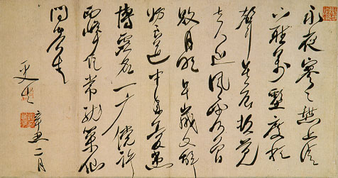

義助慰安婦 —— 李敖百件珍藏義賣藝術品（第10件） 品 名： A10. 康有為永夜詩 預估價： 10 萬 成交價： 22 萬 說 明： 清朝後葉，戊戌政變後，六君子被殺，政變主角廣東南海人康有為，流亡海外。此詩寫於西元 1901 年，原為孫科收藏，後流落某收藏家手中。該收藏家因佩服李敖能一口氣讀完全詩，一眼認出所有草字，故便宜賣出。 
清朝後葉，戊戌政變後，六君子被殺，政變主角廣東南海人康有為，流亡海外。此詩寫於西元 1901 年，原為孫科收藏，後流落某收藏家手中。該收藏家因佩服李敖能一口氣讀完全詩，一眼認出所有草字，故便宜賣出。